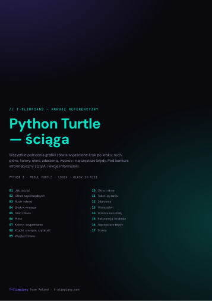

Jak wygląda konkurs
Konkursy organizuje kuratorium oświaty w każdym województwie, więc szczegóły (terminy, zakres, forma) różnią się między województwami. Prawie zawsze są jednak trzy etapy, a z roku na rok zadania coraz bardziej przypominają OIJ.
Szkolny
Test w szkole, często online. Pytania zamknięte z logiki, systemów liczbowych, analizy prostych algorytmów i wiedzy o komputerze.
Rejonowy
Trudniejsze zadania: śledzenie pseudokodu, rekurencja, arkusz kalkulacyjny i często pierwsze zadania programistyczne.
Wojewódzki
Finał. Pisanie programów (C++, Python lub Scratch, zależnie od województwa) i zadania algorytmiczne na myślenie.
Przyjęcie do wybranego liceum poza kolejnością, niezależnie od progu punktowego. Jedna z najmocniejszych przepustek do dobrej szkoły.
Dodatkowe punkty w rekrutacji do szkoły średniej (liczba zależy od rangi konkursu) i wpis na świadectwie.
LOGIA — Python Turtle
LOGIA to kuratoryjny konkurs informatyczny dla klas IV–VIII z województwa mazowieckiego, organizowany przez OEIiZK. Zadania rozwiązuje się w języku Python. Składają się z grafiki żółwia, struktur danych (listy, kopiec, grafy, napisy) oraz algorytmiki. Ten kurs prowadzi od pierwszego forward(100) aż po fraktale. Kliknij temat, żeby zobaczyć filmy krok po kroku i listę zadań do rozwiązania. Postęp zapisuje się w Twojej przeglądarce.

Python Turtle — ściąga
Wszystkie polecenia żółwia wyjaśnione krok po kroku: ruch, pióro, kolory, okno, zdarzenia, a do tego wzorce na LOGIĘ z podglądem rysunku i lista najczęstszych błędów. Wydrukuj ją i trzymaj obok komputera.
zDolny Ślązak — informatyka
zDolny Ślązak to konkurs przedmiotowy dla uczniów szkół podstawowych z województwa dolnośląskiego, organizowany przez DODN we Wrocławiu. Zadania są zbliżone do zadań z OIJ, z dodatkiem analizy gotowych algorytmów i programów (m.in. schematów blokowych) oraz pytań zamkniętych.
Strony kuratoriów
Nie ma tu Twojego województwa? Wyszukaj „konkurs przedmiotowy z informatyki kuratorium” z nazwą województwa.